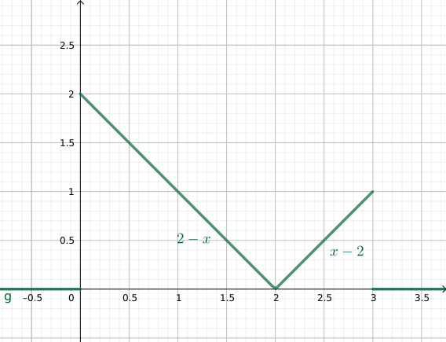
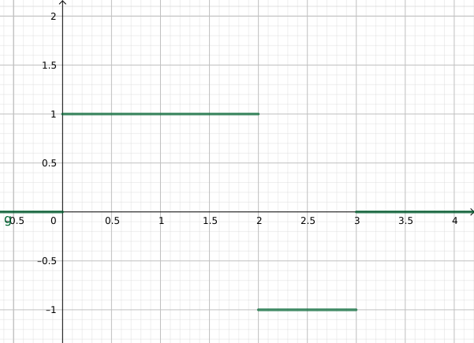

BTS - Intégrales - DS1 - Sujet B
(4 points)
Calculer les intégrales suivantes :
- \( \displaystyle \int_0^1~8t^3\,\rm{d}t \)
- \( \displaystyle \int_1^{\rm{e}}~\frac{2}{t}\,\rm{d}t \)
- \( \displaystyle \int_0^{\displaystyle\frac{\pi}{2}}~\sin(t)\,\rm{d}t \)
(3 points)
Calculer la valeur moyenne du signal suivant :

(3 points)
Calculer la valeur efficace du signal suivant :

On rappelle que \(f_{\stackrel{\rm{eff}}{\left[a;b\right]}} = \sqrt{\displaystyle\int_a^b\,\left[f(t)\right]^2\,\rm{d}t} \)